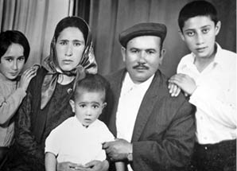

“Vardım, Ayağımı Pencereden Atarken ‘Dur’ Dedim. Pamuk’a Kim Bakacak?”
Akkız Yıldız25
Kızım Pamuk Yıldız darbeden bir ay sonra gözaltına alındı. Dev-Yol örgütü üyesi olmak iddiasıyla tutuklanarak DAL’a götürüldü, ardından Mamak Cezaevi’nde 6 yıl 7 ay yattı. İdamla yargılanıyordu ama mahkeme 15 yıl ceza verdi. 15 yılın karşılığı olarak 6 yıl yatılıyordu infaz yasasına göre. 6 yılı da yatmıştı zaten. Yani tahliyesi geldiği halde tahliye etmediler, 7 ay daha gerekçesiz yatırdılar. Babası koç almıştı gelince keseceğim diye. Koç ağlardı, ben ağlardım bahçede. O melerdi, ben melerdim. Pamuk gelmeyince koçu başkasına sattık.
Kızım çıktıktan sonra dava lehine bozuldu. Devrimci Yol örgütü üyeliğinden 5 yıl alması gerekiyordu. 5 yılın karşılığı da infaz yasasına göre 2 yıl 8 aydı. Pamuk, fazladan yattığı 4 yıl 7 ay için devlete tazminat davası açtı. Devlet de dedi ki: Cezaevindeki tavırlarından dolayı senin infazın yanmış. Yani dışarıda olması gereken sürede cezaevinde tutuluyor ve tavrını beğenmiyorlar. 5 yıla 5 yıl yatırdılar. 1 yıl 7 aya tazminat verdiler. Dava 1982’de açılmıştı, Yargıtay aşaması derken, 1990-1991’de bitti. Küçük bir davaydı, Akdere Devrimci Yol Davası. 10 yıl sürdü.
Darbeden Önceki Hayat
Akdere, Mamak’ta yaşıyorduk. Pamuk ve küçük oğlum okula gidiyordu. Pamuk aranıyordu o dönem. Büyük oğlum askerdeydi. Askerden izinli geldiği sırada onu ve babasını Emniyet’e götürdüler.
Darbeden önce herkesle iyiydik. Eskiden ayrı gayrımız yoktu. Aynı mahallede herkes birbirini desteklerdi. Sonra evlerimiz kurşunlanmaya başladı. Yerlerde yatıyorduk hepimiz camlarımız kurşunlanacak diye. Yani o kadar kötüydü ortam. Ya sağcı olmak zorundaydın ya da solcu. Mahallene uyum sağlayacaktın. Mahallede sağcılar çok azdı. Tuzluçayır’a Küçük Moskova diyorlardı. Abidinpaşa’ya inemiyorduk mesela. Gelirken sağcılar halk otobüslerini kurşunluyorlardı.
Biz solcuyduk. CHP’yi destekliyorduk, soldan da haberimiz yoktu ya... Dedem 12 sene askerlik yapmış. Nerede kaldığını da bilmiyorduk zaten. Ama CHP geldikten sonra millete azıcık özgürlük vermişti ya, ebem bana da derdi ki çocukken: Ben oyumu CHP’ye veriyorum sen de CHP’ye vereceksin ömür boyu. Ebem yani babaannem, hepimiz desteklerdik. Eşim desteklemezdi CHP’yi. CHP’ye de hiç oy vermedi. Mustafa Timisi’nin Birlik Partisi’ni desteklerdi. Atatürk’e de küfrederdi. Biz Alevi’yiz, Alevilerin hepsi sola verirdi zaten.
Ben 45 yaşındaydım ve hayatımda ne akrabalarımdan ne çevremden kimseyi cezaevinde görmemiştim. Ne öyle jandarmanın kapının önüne geldiğine şahit olmuşum, ne de polisin. Çocuklarım asker gördüklerinde peşi sıra koşarlardı, asker ağabeyi gelmiş diye. Polise de öyle. Yani bilmiyorlardı ne olduğunu, anlamıyorlardı demek ki. Hiçbirimiz anlamıyorduk daha doğrusu. İlk defa o zaman gördüm ve anladım ben. Ama şimdi nefret ediyorum polisten de askerden de. Gerçekten de askerle polisin hiç vicdanı yok, merhameti yok. Bir onların eline düşme yoksa... Benim kızım da karıncayı incitmeyen bir kızdır diye düşünüyordum. Gerçekten de öyleydi. Küçükken sağlıklı bakamadım, biraz hastaydı. Onun için hep gözüm üzerindeydi. Ama bir baktım ki kızım devrimci olmuş. Aranıyor.
Pamuk’u Alıyorlar
Pamuk eve gelmiyor. Alındığı gün de erkek kardeşimin oğlu bizde kalmıştı. Ona “Pamuk sizde mi?” diye sordum. “Yok hala, bize gelmedi!” dedi. O akşam polisler bizim evi bastı. “Akrabalarından birinin evine bizi götür” dediler. Eşim, Pamuk, dayısında değil nasılsa diye polisleri onlara götürmüştü. Bir de bakmış ki, Pamuk orada yatıyor. Kızımla beraber kardeşimi de götürdüler. Kardeşim dünyaların en iyisi diyorum ben. Kardeşler kötü olmaz ama... Gerçekten bambaşka bir insandır. 40 gün de dayısı yattı.
Kızımı oradan aldılar DAL’a götürdüler. Ben de peşi sıra gittim. 17 gün orada kalmış. Emin Değer avukatımız oldu. Emin Değer’e vardım. Böyle böyle dedim, kızım tutuklandı ama ben cezaevinin nasıl olduğunu bilmiyorum, nerede olduğunu bile bilmiyorum. Zaten DAL’da görüşme olayı yok. Dolayısıyla Pamuk’u göremiyorum. Bir de nüfus kâğıdımda evlilik soyadım yokmuş. Babamın soyadını taşıyormuşum. Evli görünüyormuşum ama Pamuk’la soyadımız tutmuyor. Bir ay sonra Mamak Cezevi’ne geçince, soyadınız tutmuyor diye görüştürmediler, nüfus kâğıdı çıkarttırdım da ondan sonra görebildim. Kardeşimle soyadım tuttuğu için Mamak’ta görüştüm ama kızımı göstermediler.
Kızım ilk önce 17 gün DAL’da kaldı. 6 kişiyi öldürmekle suçlanıyor. Bu cinayetleri üzerine yıkıyorlar ama işin içinden de çıkamıyorlar. Bu sefer sürekli savcılığa çıkartıyorlar. Savcı herhalde tekrar Emniyet’e götürülmesini istiyor. Ondan sonra Emniyet’e götürüyorlar. Yok işte öyle olmamış şöyle olmuş, başka biri yakalanıyor başka bir ifade veriyor. Onların planına uyacak şekilde iddiayı bir temele oturtmak için sürekli gidip geliyor. Mamak’tan Emniyet’e altı kez götürülüp getirildi. Kızımın suçlandığı, mahalleden götürdüklerinde kabul ettirdikleri ifadelerde 6 tane cinayet var ama bunlardan 5 adam ölmemiş. Yani 5 ölü yok.
Bakkalımız vardı, polisler bakkala gelip müşterilere ellerindeki fotoğrafı göstererek “Bunu tanıyor musun?” diye soruyorlar. Bazıları, hem de muhitin adamları, tanıyorum demişler. Bir sürü yaşlı başlı, mahalleden insanları, yüzlerce kişiyi toplamışlar, işkenceyle ifadeleri kabul ettirmişler... İşte Pamuk, verilen bu ifadelerdeki suçlardan yargılandı. Diğerlerine kabul ettirdikleri ifadeyi, Pamuk da kabul etmiş işkenceler sonucunda. Yine de olayı delillendirecekleri hiçbir şey çıkmıyor tabii. MHP’li bir sürü faşist tanık geliyor, savcıya gösteriyorlar bizimkileri. Savcılığa teşhis için tutukluları götürdüklerinde, tanıklarla devrimcileri salonda önce karşılıklı oturtuyorlarmış, sonra tanıklar yakalanan devrimcileri teşhis edereken şaşırmasınlar diye kimin adı ne, bilsinler diye isimlerini okuyarak tek tek çağırıyorlarmış. Bunları mahkemelerden öğrendik hep. İsimlerini okuyorlar ki, ona göre gelsin. Sağcılar mahkemeye geliyorlar, dinliyorlar, kime hangi suçu yıkmışlar öğreniyor, sonra gelip teşhis ediyorlar ama o kadar yalandan ifadeler veriyorlar ki, inandırıcılığı olmuyor. Kadın diyor ki “Ben bu kızı şurada gördüm. Geceleyin gördüm, iki kolunda 2 otomatik vardı, her tarafı silah doluydu”. Pamuk’un avukatı soruyor: “Bu olduğunu nasıl bildin?” diye. “Silahların tangırtısından anladım” diyor. Öncesinde pencerem kapalı, açamıyorum diyor ama tangırtısından anladım diyor. Bunları sonradan Pamuk anlatıyor.
Emniyet’te mezhebin nedir diye soruyorlarmış. Gerçi orada, “Haydi bunlar komünist kızılbaş sizin ne işiniz var?” diye en çok Sünniler dayak yiyormuş. İslam’ın şartlarını soruyorlarmış, bilemeyenleri dövüyorlamış. Orada Türk müsünüz Kürt müsünüz diye soruyorlarmış. Zaten Kürtçe konuşmak yasaktı. Ailesi Kürt olan biri hiçbir şey yapamazdı. Kürt bir tutuklunun annesi gelmiş mesela, hiç Türkçe bilmiyor. Ankara’daki solcu Kürtlerin hepsini şu ya da bu şekilde tutukladılar bu arada.
En son DAL’a götürdüklerinde, kızımı sordum, “İşte şurada” dedi bir polis. Baktım, gösterdiği yerde sadece hurda yığını var. Emniyet’in arkasında bir yer, her yer eşya dolu. Pamuk, Pamuk diye bağırıp arıyorum. (ağlıyor) Mutfak taşı gibi taştan beton atmışlar, iki kız o taşın üzerinde oturuyor. “Pamuk’u gördünüz mü?” dedim, birinin yakasından tuttum silkeledim. Sanki taş olmuşlardı ikisi de. Ağızlarından tek bir kelime alamadım. Onlar da Emniyet’teymiş. O kızlar gözümün önünden hiç gitmiyor. Gerçekten, düşmanımın çocuğunu bile oralara düşürmesin. Çocuklarımız kötü niyetli değildi ama devlete güç yetmiyor derlerdi de inanmıyordum. Meğer gerçekten yetmiyormuş.
Yine de Pamuk gitti, ben de gittim Emniyet’e. Akşama kadar kapılarda bekledim. Evden bir şeyler alıp götürürdüm. “Vermezsiniz biliyorum ama elimden alın, ben verdim sayarım, eve götürmeyeyim” derdim. Analık o kadar zormuş ki, insan başına gelmeyince hiç bilmiyormuş. (ağlıyor)
Çorum’un Çukurlu köyünden Satılmış Şahin Dokuyucu adındaki bir çocuğu DAL’ın altıncı kattaki penceresinden aşağıya atmışlar. İntihar etti diyorlar. Bir gün dedim ki, ben de kendimi atayım buradan. Ne buralarda sürünüp duruyorum. Vardım, ayağımı pencereden atarken “dur” dedim, Pamuk’a kim bakacak, aklın başına gelsin. Atamadım, insanın canı da kıymetli oluyor galiba. Bir de ben olmazsam Pamuk’u kim arar sorar, ölmek istediğim her an onun için yaşamalıyım diye düşündüm.
Mamak Günleri
Akdere’de bir gecekonduda oturuyoruz. Benimle cezaevine gelecek kimse yok. Gelin “Bunlara mı hizmet edeceğim?” dedi, oğlumla birlikte ayrı eve çıktılar. Zorla tutamıyorsun. Cezaevine ya ben gideceğim ya da babası. Ben düştüm Pamuk’un peşine. Benim okumuşluğum yok. Her şeyi yazamıyorum, kafam karışıyor. Unutuyorum... Bir de eve geri gelince sürekli eşimle kavga ediyorduk.
Her hafta Mamak’a gidiyordum, görüş olsun olmasın. Çünkü harçlığını ve eşyasını gönderiyordum içeri en azından. Sabah kalkıyordum, erkenden gidiyordum. Sıraya giriyordum, eşyalar kontrolden geçiyordu.
Arıyorlardı, tek tek. Para veriyorsan onu yazıyorlardı. Soba yakıyorlardı askerlerin durduğu yerde. Biz varınca su döküyorlardı, kapatıyorlardı, üşüyelim diye. Ama laf söyletmiyorlardı. Bir de yalnızca soyadı tutanlara görüş izni veriyorlardı.
Anası babası Ankara’da olmayan kızlar vardı. Onların çamaşırını da getirip yıkıyordum Pamuk’un çamaşırlarıyla beraber. Her hafta çamaşırları götürmek zorundaydım. Suyumuz da yoktu. Ondan bundan su topluyordum, elimde yıkıyordum ve götürüyordum. Sonradan üzüntüden mi neden bilmiyorum, sinir sıkışması oldu, elim çalışmamaya başladı. Ameliyat oldum, elimi kullanamıyorum. Bir seferinde Pamuk, kardeşiyle çamaşır göndermiş, gelin yıkamadan geri göndermiş. Bir de tabii askerler, götürdüğümüz çamaşırları ayaklarının altında çiğneyip öyle veriyorlarmış çocuklara. Ben çamaşırların üzerine kolonya döküyordum. Bu sefer de sen uyuşturucu döküyorsun diye bana da kızıyordu askerler.
Mamak’ta kafesleri görüyorduk önceleri. Sonradan bizi başka bir yerden içeri almaya başladılar. Onlar daha çok acı veriyordu. Hepsini dolduruyorlardı kafese, demirin içine. Kuru yerde oturuyorlardı. Kesinlikle kafalarını kaldıramıyorlardı, imkânı yok bakamıyorlardı. Gerçekten çocukların beti benzi kül gibi, aç susuz, o betonun üzerinde oturuyorlardı. Hiç kıpırdamadan, imkânı mı var ki kıpırdasın da sana baksın...
Kızım Mamak’a nasıl dayandı, onu bilmiyorum işte. 7 sefer öldü haberi geldi. Romatizma geçirmişti küçükken, ondan dolayı kalp hastasıydı. Sürekli görüşlerini yasaklarlardı. Önceleri bir ay görüştürüyorlarsa, iki ay görüştürmezlerdi. Kurallara uymuyor diyorlardı. Açlık grevinden sonra düzelecek diye beklerken her şey yeniden başladı. Kesintisiz bir yıldan fazla görüştürmedikleri oldu. Öldü diye haberleri geliyordu, başka türlü haber alamıyoruz. Bir gün bir hemşerim “Ondan umudunu kes gayrı, oradan sağ çıkmaz, öldürürler, yok say!” dedi, çok zoruma gitti, bir daha konuşmadım onunla. Gerçekten, ben 7 sene kapı kitlemedim, ha geldi ha gelecek diye. Hep kapının önünde bekledim. Belki bırakırlar diye.
Açlık Grevleri
Pamuk 17 gün açlık grevine girmiş. Hastalanmış, hastaneye, Gülhane’ye götürmüşler. Ben, başka bir hastaneye gittim, burada yok dediler. Gülhane’de dediler. Gülhane’ye vardım, Pamuk’u ve arkadaşlarını çıkartıyorlarmış, cezaevine geri götürüyorlarmış. Yalvardım, yakardım peşi sıra, görüştürmediler.
Cebimde şeker götürdüm de onu bile almadı, grevdeyim diye.
Polis Bizi İzliyor
Polis yıllarca kapımızın önünde çadır kurdu, oturdu bahçemizde. Küçük oğlum, ufaktı, 8-9 yaşında, onu yanlarına alıp götürüyorlardı, bilgi verecek diye. Polis bir tek Pamuk’a zarar vermedi. Bütün hepimizi mahvetti. Bakkala gelip oturuyorlardı. Gel seni gezdireyim diye alıp götürüyordu çocuğu. Ağzından laf almak için gezdirmeye götürüyorlardı. Sen şöyle akıllısın, sen böyle akıllısın, sen çok güzelsin, senin her şeye aklın eriyor falan diye sıkıştırıyorlardı. Geri geliyorlardı yine oturuyorlardı. Bahçede masa kurdular. Orada yiyip içiyorlardı. İşte şunu verin, bunu verin, acıktık, yemek yiyeceğiz... Sonra eşim dedi ki: “Benim bir kızım var içeride, devlet neyse verdi cezasını, siz daha benden ne istiyorsunuz?” Meğerse geleni gideni, bakkala giren çıkanı takip ederlermiş. Birçok insan takip ederler diye zaten gelemiyordu korkusundan.
Eşimle Tartışıyoruz
Biz 27 sene bakkallık yaptık. Şimdiki gibi kapının önüne gelmiyor mallar, sırtta taşınıyor her şey. Yalnız hiçbir iş görülmüyor tabii, hep eşimin yanında durmam gerekiyor. Kızım cezaevine düşünce eşim ve ben çocukları ayırt etmeye başladık. O büyük oğlumu aldı, oğlum bir süre sonra evlendi gitti. Ben kızımı aldım yanıma. Kızımın peşi sıra gittim, eşim de benim inadıma oğluna yardım etmeye başladı. Hesap et yani, evlat ayırt edilir mi? Ama işte bilmediğimizden, başımıza daha önce böyle bir iş gelmediğinden...

Pamuk Yıldız ailesiyle birlikte
Pamuk içeri girince bir anda yalnız kaldık. Bütün akrabalarım benden vazgeçtiler. Pamuk suçlu görününce herkes soğudu tabii. Çünkü korkuyorlardı. Eşim dayanamıyorum diye gelmiyordu cezaevine. Hem de birimiz gitsek birimiz kalmak zorundaydık bakkalda. Ben gittim. Sonra bir sene görüş yasağı oldu. Bir sene boyunca görüştürmediler, yasak koydular. Eşim huysuz bir insandı, sevgi ile konuşacak biri değildi. Çocuklarına bile sevgi ile yaklaşmadı hiçbir zaman. Eşim dedi ki sen herhalde anlamıyorsun ne olduğunu, ben gideyim, sorunları neyse ben anlayayım dedi. Oraya varmış, görüş yok tabii. Para veriyor kızıma versinler diye. O esnada çocuklarımızı gösterin bize demiş. “Suçu neyse biz de anlayalım, yıllardır kadın tutuklular kurallara uymuyorlar diye görüş yasağı koyuyorsunuz, ne yapmış bunlar?” diye sorarken arkasından bir cop vurmuşlar boynuna. Orada ağzından burnundan kan gelmiş. Oturtturmuşlar, elini yüzünü yıkamışlar. Geri dönüp demiş ki askere: “Oğlum ben buraya gelecek kadar para buldum, senin belki paran bile olmayacak, ne için vuruyorsun, sen de bizim gibi fakirsin”. İşte o zaman omuriliği zedelenmiş.
Eşimle tartışmalar yaşıyorduk. Sevmiyordu evde yalnız durmayı. Bir de sefil oluyordu, yardımcısı yoktu. Onun için kızıyordu sen hep kızına gidiyorsun ben hep yalnız kalıyorum, beni düşünmüyorsun diye. O da haklıydı kendi çapında. Ben de tabii o zaman şimdiki kadar olgun değilim. Eşimin kazancını harcıyorum tabii. O zaman oğlum, “Sen hep kızına harcarsan ben bu evde durmam. Beni düşünmüyorsun!” dedi ve gitti. Gidince, adam tamamen yalnız kaldı. Bakkala mal almak için Samanpazarı’na giderdi, sırtında taşırdı. Acıkıyordu, terliyordu, yoruluyordu. Geliyordu evde kimse yok. Nasıl bağırmasın? Düşünüyorum şimdi, ona da hak veriyorum. Ama o zaman öyle düşünmüyordum gerçekten. Hep kavga ediyorduk. Ya diyordum, ben olmasaydım kardeşi ve babası bakmayacak mıydı acaba Pamuk’a?
Bir keresinde eşim beni kapıya koydu kış günü. Çocuk içeride ağlıyor, almıyor içeri. Kapıyı kilitledi. Üstümde bir giyecek yok. İçerde kaynana, kayınbaba, kaynım ve eltim var. Onlar da diyor ki iyi olsa kapıya koymazdı. Bildikleri halde yine de öyle diyorlar. İşte ondan astım hastalağına yakalandım. Bu sefer yokuşları çıkamadım, daha kötü oldum.
Ailelerin Dayanışması
Cezaevine gidip gelirken gördüm ki benim gibi dertliler çokmuş orada. Onlarla az çok diyalog kurmaya, birbirimizi teselli etmeye başladık. Diğer aileler olmasaydı insan delirirdi orada. Gerçekten. Hepsinin acısı bir oldu. Hepsinin çocukları aynı nedenden orada olduğu için birbirimize çok yardımcı olduk. Nereye gittiysek beraber gittik onlarla. Hiç bilmediğim arkadaşlarım oldu. İşte o arkadaşlar olmasaydı nasıl dayanabilirdim bilmiyorum.
Kızım içeri girinceye kadar siyaset nedir bilmiyordum ki. Şimdi diyorum ki, hayat siyasete bağlıymış meğer. Pazara gidiyorum siyaset, ekmek almaya gidiyorum yine siyaset... Gerçekten ben bunları hiç anlamamıştım o zaman. Bana arkadaşlarım öğretti. Orada yaşayanlar, bilenler... İçeridekilerin en küçüğü Pamuk’tu. Ötekiler üniversite öğrencileriydi, doktordu... Hepsi bilinçli kişilerdi. Devletin ne olduğunu onlar bana anlattı.
Aileler olarak Emniyet’in önünde oturduk, Başbakanlığın önünde oturduk. Ne bileyim Cindoruk’un kapısında bile bekledik. Yani beklemediğimiz yer yoktu. Kızılay’da şimdi başkaları oturuyormuş. Biz çok oturduk Kızılay’da, Güven Park’ta. Orada buluşuyorduk. Bir kadın vardı, Suna Tural. Eski CHP’den milletvekiliymiş kendisi. Onun yanına çok gittik illa bize yardım et diye. O da yardımcı olmak için elinden geleni yaptı.
Sıkıyönetim başkanı varmış. Suna Tural dedi ki bana, ona git, olanı anlat. Oraya varınca adam hemen kızdı bana. Dedim ki, kızım kalp hastası, 17 yaşında, liseye gidiyordu. “Kızın 7 kişiyi öldürmüş. Suçsuz diye burada gelip bana mı ağlıyorsun?” dedi. “Önceden çocuğunuza sahip olsaydınız” dedi. Dersimizi aldık geri geldik.
Ailelerimiz ve avukatlarımız çok destek oldu. Onlar da çok saldırıya uğradılar o zaman. Emin Değer ve Şenal Saruhan çok yardımcı oldular. Onlardan alıyordum hep haberleri.
Kızım Çıkıyor
Çıktığı günü çok iyi hatırlıyorum, ben gittim getirdim Mamak’tan. 25 yaşına gelmişti ama küçücük bir çocuktu. 30-35 kilo falan. O kadar çökmüştü ki, kemikleri çıkmıştı, yüzünün kemikleri. Hiç kıyafeti yoktu, bir gün alışverişe gittik, Samanpazarı’nda gezerken oturdu ağladı. “Anne ben yürüyemiyorum, eve gidelim” dedi. Hiçbir şey almadan geri geldik. Merdivenden çıkamadı. Tabii gücü yok. Kaç zamandır gezmemiş hiçbir yeri.
Doktorlar hemen kalp ameliyatı yapılması lazım dediler. Hiçbirimizin sigortası yok. Ameliyatın da yapılması lazım. Pamuk, hasta hasta bir yerde çalışmaya başladı. Hiç değilse 4 ay 5 ay çalışırsam sigortalı olurum dedi. Orada da çok kötü günler geçirdi. Burnu kanıyordu, tansiyonu yükseliyordu. İşte 6 ay çalıştı. Romatizması cezaevindeki kötü şartlar yüzünden ilerlemiş. Vitaminsiz kalmış. Kalp hastası olunca biraz korunmalı olacaksın. Olmuyor. Adam dövüyor, dışarıya atıyor, tabutluğa götürüyor. Onlar hızlandırmış kalbi. 40 yaşına kadar normal bir şekilde idare edebilecekken, çıkınca ameliyat olmak zorunda kaldı. Çıktıktan sonra dişleri döküldü, ayaklarından rahatsızlandı, yürüyemedi, yıllarca yattı. Ellerine, bileklerine vurula vurula sinirleri hep hasar görmüş. Yani işte buna çok şükür diyoruz. Şimdi ayakta duruyoruz işte ikimiz de. 7 sene yatıyor. 7 senede bir gün dayak yemeden günleri geçmiyor, bir gün olsun. Nasıl dayanıyorlar, gençlikten mi dayanıyor? Orada birbirlerine güç mü veriyorlar ne yapıyorlar, gerçekten düşünürsen... Şimdi elimi kaldırsam sinirden çatlar.
Pamuk’u ameliyata götürüyorlardı. Çıkarken baktım ki ağzında tampon gibi bir şey var, ölmüş gibiydi, onu öyle görünce bayılmışım. Beni de aldılar götürdüler. Yoğun bakımda yattım akşama kadar. Bir daha gidemedim tabii yoğun bakımdayken. Arkadaşları çok destek oldular. Bir süre bizimle yaşadı, sonra babası ile anlaşamadığı için yine iş aramaya çıktı hasta hasta. İnşaat Mühendisleri Odası’nda çalıştı. Çalıştıktan 9 sene sonra sendikaya kayıtlı oldukları için Pamuk’la beraber arkadaşlarının hepsini attılar işten. Çok morali bozulmuştu. Hollanda’ya gitti, 3 sene orada kaldı. İş bulamamış, sonra geri geldi. Geri geldi ama kendisi rahatsız. Ömür boyu kan tahlili yaptırması gerekiyor. Aldığım maaş 100 liraydı. Pamuk’un hastalığına mı bakalım, geçinelim mi? Pamuk’un da içinde bulunduğu dostluk vakfı, sigortasının geri kalanını yatırdı ve emekli oldu da rahata erdik. Eskiden çok zorluk çektik. Biz Bağkur’luyduk. Rahmetli emekli olduktan sonra 8 ay para yatırdı da ondan sonra bize cüzdan verdiler. O zaman bakkalımız çalışıyordu, daha eşim emekli olmamıştı. Onun için sigortamız yoktu. Ona buna yalvara yakara hastaneye gidiyorduk işte.
Pamuk çıktıktan sonra liseyi bitirdi. Üniversite sınavlarına girdi. Açıköğretime yazıldı ama yapamadı, sınavlara gidemedi. Hastalık dönemine denk geldi. Bir kez gitti sınava, tansiyonu çıkmış, burnu kanamış, yarıda çıkmak zorunda kalmış. Bir de zaten kamu hizmetlerinden men cezası vardı. Bitirse bile kamuya giremeyeceği için devam etmedi.
Pamuk içeri girdiğinde küçük oğlum ilkokulu bitirmişti. Her gittiğim yere okuldan fırsat buldukça onunla gittim. Küçükle ben düştük Pamuk’un peşine. Küçük oğlum ziyarete gidemediği zaman her hafta mektup yazdı, bana çok yardımcı oldu. Pamuk çıktığında lise sondaydı. 1989-1990 yılı gibi üniversite sınavlarına girdi. ODTÜ’yü kazandı, hazırlıktaydı. Orada öğrenci derneğine girdi. Sonuç olarak küçük oğlum da cezaevi kapılarında büyüdüğü için politik birisiydi. 1989-1990 yılında herhalde oğlumun bir arkadaşını alıyor jandarma. Örgüt üyeliği suçunu işkence ile yüklüyorlar üzerine. Çocuk kendini asmaya kalkıyor. Sonra tanıdığı bütün arkadaşlarının da adını veriyor. Polisler geldiler, evi aradılar. Pamuk’un yazdığı defteri, kitapları alıp götürdüler. Pamuk önceden yatmış diye götürmek istediler, vermedim. O hasta, dedim. Pamuk’un yazdığı, götürdükleri defterlerdekileri okuyup okuyup aynılarını yapmışlar oğluma. 17 gün işkence yapmışlar. Pamuk’tan daha fazla işkence görmüş. O da geri geldiğinde delirmiş gibiydi. Sonra okuldan atıldı. Çünkü hazırlıktaydı, muafiyet sınavlarına giremedi. Psikolojik olarak çok kötü oldu. Almanya’da arkadaşları aracılığıyla Bremen Üniversitesi’ne kaydını yaptırdı. Öğrenci olarak gitti, felsefe okudu, bir daha da gelmedi. Oğlum diye demiyorum derya gibi bir çocuktu.
Babanın Sağlığı
Pamuk çıktıktan 3 yıl sonra eşim hasta oldu. Önce hastalığını anlamadık, eline ne alırsa düşürmeye başlayınca anladık. 7 sene elleri hiç tutmadı, yediği darbeden omurilik zedelenmiş dediler, ameliyat oldu ama iyi olmadı. Hep Mamak’ta boynumun köküne asker copla vurdu, burnum kanadı ondan oldu derdi. Kas erimesi hastalığına yakalandı. Yemeğini ben yedirdim. Kollarını kaldırıp bırakıyorsun düşüyor. Dünyada tedavisi olmayan bir hastalıkmış. Yapacak hiçbir şey yok dedi doktorlar. Sonra Ankara Hastanesi’nde ameliyat ettirdik, hastalık ayağına biraz geç insin diye. Bir sene sonra ayaklara da inince tamamen yürümeyi kesti. 3 sene boyunca yatağa bağlı kaldı. Bir de prostatı vardı. Sonda ile idare etti. Bir parmağım oynasa da derdi, şu tevizyonu değiştirsem. Hesap et, bir parmağı... Yıllarca hiç yatmadan oturdum başında. (ağlıyor) Ben iyi olacağım diyordu, öyle umut doluydu yani. Hiç umutsuz olmadı. Kızım hasta çıktı, kalp ameliyatı oldu, babası yatağa düştü. Hangisine yanacağını bilmiyorsun. O zaman kendi sağlığını unutuyorsun, hiç aklına gelmiyor. Gerçekten, önceden de sağlıklı değildim ama hep kendimi erteledim. Babasının hastalığına düştük zaten. Ankara iyi gelmeyecek Antalya’ya gidelim dedi, oraya gittik. Kapısı, penceresi olmayan viran gibi bir eve girdik. Kapının önünü düzlemesen olmuyor, badana yapmasan olmuyor, orada yaşıyorsun. Hastaya mı bakarsın, ona mı bakarsın? Arabaya inip binemiyorsun. En son ayakları da tutmayınca Ankara’ya geri geldik. Bu sefer de bizim evde oturan büyük oğlum, ben evi geri vermem dedi. Oğluna da üzülüyorsun tabii. 3 tane çocuğu var. Kirayı veremiyorum diyor, ben nereye gideceğim diyor. Bir de onu düşünmek zorunda kalıyorsun.
Ondan sonra ben de hasta oldum. Baş ağrısından duramıyordum. Dediler ki, tümör var başında. Seneler sonra geçince iyi huylusu, bunu böyle çekersin ölene kadar dediler. Eline koluna bir zarar vermiyor nasılsa diye avuttular beni.
Baba-kız konuşmuyorlardı pek. Eşim sevgi nedir bilmiyordu. Pamuk’un mücadelesini de onaylamıyordu. Her şeye karşıydı zaten. Agresifti, beni döver her şeyden kavga çıkarırdı. Kolu bacağı tutmadığı zamanlarda ayaklarını yıkardım yüzüme tükürürdü. Pamuk çıktıktan sonra yaptığım yemeği beğenmedi kömürlüğe kilitledi beni. Ondan sonra Pamuk, boşanacaksınız diye tutturdu ama iş güç yok, boşanamadık. Çok tersti yani. Bu süreçte bir de ailenin erkekleriyle uğraştım. Çünkü eşim çok huysuzdu. Benim ömrüm hep çileyle geçti. Gerçekten.
Aile Desteği
Akrabalarımız hiç gelmek istemediler bize zaten. Pamuk çıktıktan sonra bile korktular. O zamanlar aynı görüşte olanlar, aynı fikri taşıyan kardeşimin çocukları vardı. Sonradan hepsi akıllanmış nasıl olduysa! Darbeden önce devrimci olan kardeşimin çocukları bile korkudan arayıp sormadı. Gerçekten. Düşenin dostu olmuyor diyorum da bazen, bana kızıyorlar. Allah kimseyi düşürmesin. Yalnızca kardeşim, Pamuk’un dayısı, sahip çıktı. Pamuk’la birlikte 17 gün kaldı, DAL’ı da yaşadı. Cebinden İlhan Selçuk’un yazısı çıktı diye dövdüler. İçişleri Bakanlığı’nda çalışıyordu, işten attılar. Tutuklanmadı ama cezaevinde de kaldı 1 aya yakın. Sonra sorgu hâkimine çıkınca oradan bıraktılar. Yaşlıydı zaten, Tepecik’te evleri vardı. Onları oradan çıkartmak için çok kurşunladılar evlerini. Sağcıların yoğun olduğu bir bölgeydi. Hâlâ hiç konuşmaz o döneme ilişkin. Bir kere konuştuk, ağladı ağladı bir şey anlatamadı. Yine de bir gün bile “Senin kızının yüzünden ben şunu yaşadım” demedi.
Umduklarından hep yardım bekliyorsun. Gönül kırgınlığım oldu da sonradan unuttum. Ben kimse ile küs kalamam. Şimdiden sonra zaten küs durmam. O zaman kardeşlerimden çok bekledim mesela. Onlar da zor zar geçiniyordu zaten.
Azıcık kendini sıkar da harcamamayı öğrenirsen, sıkıntı görmüyorsun, idare etmek zorunda kalıyorsun. Karnını doyuracak kadar, kimseye muhtaç olmayacak kadar idare etmek zorundasın. Biz de öyle yaptık o dönem.
Psikoloji
Nasıl olabilir, şöyle düşün kendi kendine? Bir tek kalp hastalığı için götürdük doktora. Öyle ayrıca psikoloğa götürmedik. Kendi tedavisini biraz da kendisi yaptı. Hiçbir şey anlatmıyordu zaten. Ben arkadaşlarından duyuyordum... Daha yeni yeni, arada bir anlatır. O anlatmıyordu, ben de sormuyordum. Çünkü biliyordum zaten. Onun yaşadıklarını ben de yaşıyordum. Emniyet’te ona işkence ederlerken sanki bana da ediyorlardı. Her yerim sızlıyordu. Zaten ancak analar bilir o acıyı.
Keşke Dediklerim
Kızıma “Keşke bu işlerle uğraşmasaydın, başımıza bunlar gelmeseydi, ben de bu cezaevi kapılarına gelmeseydim!” diye çok dedim. Ömrüm öyle geçiyor zaten. Gerçekten. Hep o keşke ile geçti. Mücadelesinde haklıydı da ne oldu gene biz haksız olduk. İçeri düşenleri hep suçlu gördüler, zaten onlar suçluydu dediler. Dışarıda kalıp da yakayı kurtaranlar içeridekileri unuttu. Kendileri suçsuz, içeridekileri suçlu diye düşündüler yani. Değmiyordu, şimdiden sonra da değmez. İçeri düşene kadar bilmiyordum kızımın mücadelesini, girdikten sonra öğrettiler orada. O zaman nasıl desteklemeyeyim, her yere gidiyordum, hiç peşinden ayrılmadım. Evi falan da unuttum. Ölünceye kadar peşindeyim dedim.
Pamuk içerideyken hep derdim ki, gelsin de benimle kavga etsin, hiçbir işimi yapmasın. Gerçekten, sadece kavga etsin yeter diyordum. İnan öyleydi. Şimdi kavgasına razı oluyorum.
Hiç Aklımdan Çıkmıyor
Kızımı alıp götürdüklerinde 24 saat böyle oturmuşum, hiç kıpırdamadan. Evdeyim, kulağım duyuyor ama kıpırdayamıyorum. Evdekilere göz kırptım şöyle silkeleyin beni diye. Şok yaşıyorum. 24 saat hiç kıpırdamadan, yatmadan kilitlenip oturuyordum ve bunu günlerce yaşadım.
Hiç gelmez diye düşünmedim, hep kapımı açık bıraktım. Ha geldi ha gelecek diye hep kapıyı bekledim. Bakkala müşteri geldiğinde de hep Pamuk geldi sanıyordum. Koşa koşa kapıya çıkıyordum. Gün verdiler, ya koyverirlerse diye bekliyordum. Emniyet’e gidiyordum yine bekliyordum. Belki de oradan koyverirler diye. Hiçbir zaman insan vazgeçemiyor, başka türlü düşünemiyor.
12 Eylül Davası
Müdahil olayım dedim ama olamadım. Yargılanmalarını istiyorum, hem de nasıl ama suçlanmıyorlar. 105 yaşındaki kadın geldi de niye Kenan Evren gelip ifade veremedi? O niye gelemedi? Tahsin Şahinkaya’yı niye getirmediler? Devlet onları koruyor zaten. Bence bu davadan sonuç çıkmaz. Nasıl çıkacak ki, ölecekler. Keşke içeride ölselerdi. Vallahi içim azıcık soğurdu. Şimdi içeri giren askerlere, “Çok şükür diyorum, iyi ki gidiyorlar”. Azıcık da onlar görsün yani. O kadar çocuğun hayatına mal oldu. Sağlıklı kimse kalmadı. Öğrencileri götürdüler o zaman. 17 yaşında idam ettiler. Pamuk görmüş ilk görüşe giderken ama bilmiyormuş kim olduğunu. Bacım, bacılara selam söyle demiş el kol hareketleri ile. Onun üzerine koğuştakiler söylemişler Erdal Eren idam bekliyor diye. Çok eziyet ediyorlarmış. Askerler, çocuğun kafasını gözünü tekmeler, çarparlar, havalandırmada yere düşürene kadar her sayım döverlermiş. Asmayalım da besleyelim mi diyenleri yaşatıyorlar şimdi baksana. Hastanelerde yaşıyorlar. Özel olarak yaşatıyorlar. Bu kadar milletin kanına girdiler. Katiller yaşıyor.
Çok umudum yok geleceğe dair. Ne iyilik yaşandı ki, cezaevlerinde boşalan yerleri dolduruyorlar tekrardan. Ben korkuyorum Pamuk’u yazdıklarından dolayı yine alırlar diye. Hâlâ öyle korkularım var. Telefonu elime alırken korkuyorum acaba dinleniyor mu diye. Çünkü bütün yaşantın onların elinde hazır duruyor. Oraya girenlerin hepsi suçlu oldukları için mi girdiler? Yok. Bakın Hizbullahçılar, o kadar insanı öldürdüler, biz yargılamıyoruz diye serbest bıraktılar. Nasıl oluyor? Düşünürsen gerçekten bunlar yargılanmıyor deyip serbest bıraktılar ama milletvekilleri içeride duruyor. Milllet onları seçmiş. Daha ne olacak, bunlardan ne iyilik gelir insana? Bugünleri arayacağız diye düşünüyorum ben. Ben o güne kalmam inşallah da gelenler ne yapacak? Sen ölmezsen yaşın seni öldürür derler ya, gerçekten ben çok yaşadım geri dönüp bakınca.
25 75 yaşında. Ev kadını. 3 çocuğu var. Gözaltına alınan kızı Pamuk 17 yaşındaydı.